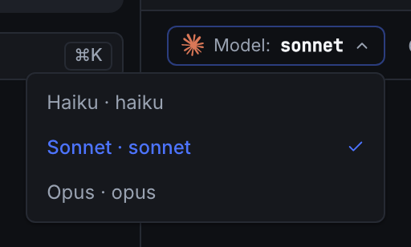
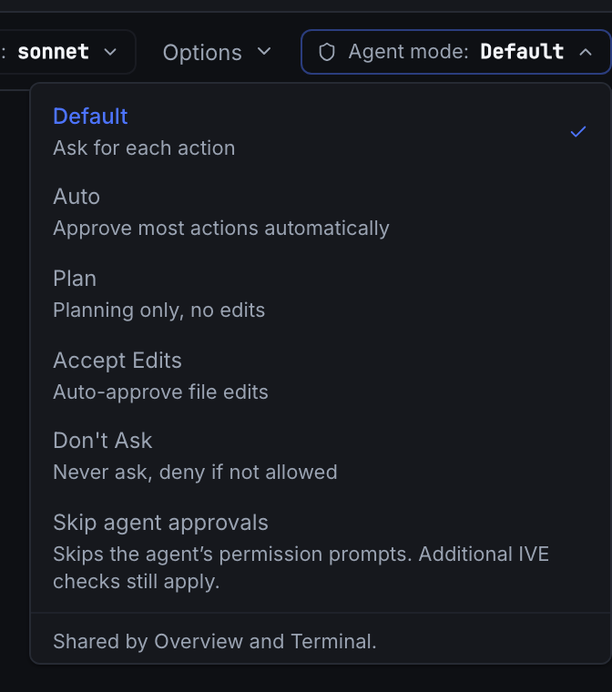
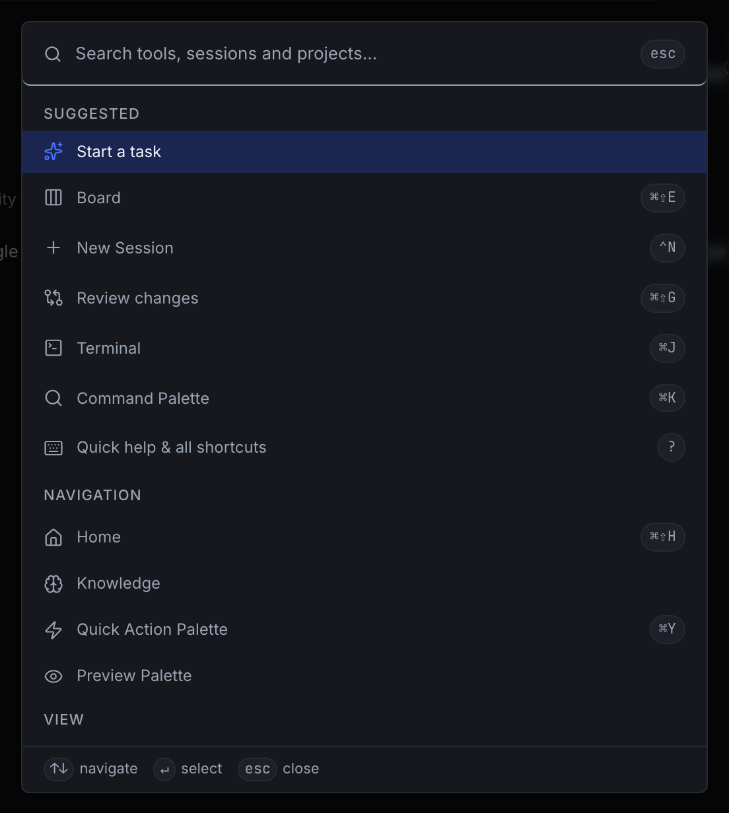

The app, view by view.
Recorded from the app itself with a demo project. No provider ran.
Home and sessions
What do you want to work on? One box, slash commands, @ for files. A session shows steps and replies in one conversation. Queued messages wait under Up next and go out when the turn ends.
Board
Every session as a tile with its state, latest reply and its own composer. Layouts from one tile to a grid. A permission request shows as a card on its tile.
Auto-fix loop
Implement, verify, fix, verify again. Every check runs in a fresh testing session, and the fix goes to the session that wrote the code. One counter limits plan revisions and fix rounds. The guided task ends with your acceptance.
Pipelines
Connect stages with arrows: agents, commands, conditions. An arrow back to a finished stage makes a loop. Command stages go through the safety check by default. Runs keep going when you close the window.
Review
A file tree beside the diff, Stage and Unstage, Annotate, Copy, and Fullscreen in split or unified view.
Loop detection
It watches each session’s recent tool calls for repeats and A-B-A-B patterns, warns at most once a minute, and types the correction at the agent’s next pause. Switch it off under Experimental features.
Models, modes and keys
The model menu shows what the session’s CLI offers. Agent modes: ask for each action, approve most, plan only, accept edits, never ask. ⌘K searches tools, sessions and projects; ? lists the shortcuts.



Also in the app.
A saved sequence of prompts, each sent after the previous turn ends. It can repeat, up to fifty rounds. ⌘Esc stops it.
⌘J opens a real terminal on the session’s process. Your CLI, your shell, inside the app.
Hooks let IVE follow each agent and let its Safety Gate stop risky commands; your own hooks stay untouched. An optional package scanner, off by default, checks installs.